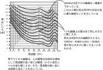

2021年
問題84 音に関する次の記述のうち，最も不適当なものはどれか．
（1）人間の可聴範囲は，音圧レベルでおよそ0～130dBの範囲である．
（2）対象音と暗騒音のレベル差が15dBより大きい場合は，暗騒音による影響の除去が必要である．
（3）空気中の音速は，気温の上昇と共に増加する．
（4）低周波数域の騒音に対する人の感度は低い．
（5）時間によって変動する騒音は，等価騒音レベルによって評価される．
2021年
問題84 正解（2） 頻出度AAA
対象音が暗騒音より10dB以上大きい場合には，測定値は対象音と判断してよい．10dBに満たない場合は暗騒音の除去などの対応が必要となる．
ある騒音・振動環境下で，対象とする特定の音以外の音・振動をを暗騒音・暗振動という．
対象騒音・振動が暗騒音・暗振動より10dB以上大きい場合には測定値は対象騒音であると判断できる．10dBに満たない場合は暗騒音の除去などの対応が必要となる．暗騒音・暗振動によるマスキングを防ぐために，なるべく暗騒音・暗振動が小さい時期，時間帯に対象騒音・振動を測定することが望ましい．
-(1) 人間の可聴範囲は2021-84-1表参照．周波数の方が頻出．
2021-84-1表 ヒトの可聴範囲
| 周波数では | 20Hz～20,000Hz（20kHz）の約10オクターブ※ |
| 音圧レベルでは | 0～130dB |
※ 1オクターブとは2音の周波数が2倍になる間隔をいう（500Hzの1オクターブ周波数の高い音は1,000Hz）.
人が音として聴こえない約20Hz以下の音を超低周波空気振動といい，超低周波空気振動と，周波数約100Hz までの低い周波数の可聴音を合わせて低周波音という．逆に，約20kHz以上の周波数の音を超音波という．
-(3) 音速度\(c\)［m/s］は，1気圧下では， 気温を\(t\)［℃］として， \[c \simeq 331.5+0.6t\] と表される．0℃で331.5m/s，20℃で343.5m/sである．すなわち，温度の上昇とともに音速は速くなる．この音速の公式は空気の弾性的性質から導くことができる．
-(4) 等ラウドネス曲線（2021-84-1図）によれば，人間の聴覚は低周波数域で鈍くなる．
2021-84-1図 等ラウドネス曲線

-(5) 等価騒音レベル（LAeq）
自動車騒音など時間的に変動する騒音をエネルギー的に等価な定常騒音で表した量．環境基本法の騒音に関する環境基準にも用いられている（住宅地・夜間LAeq45dB以下，等）．